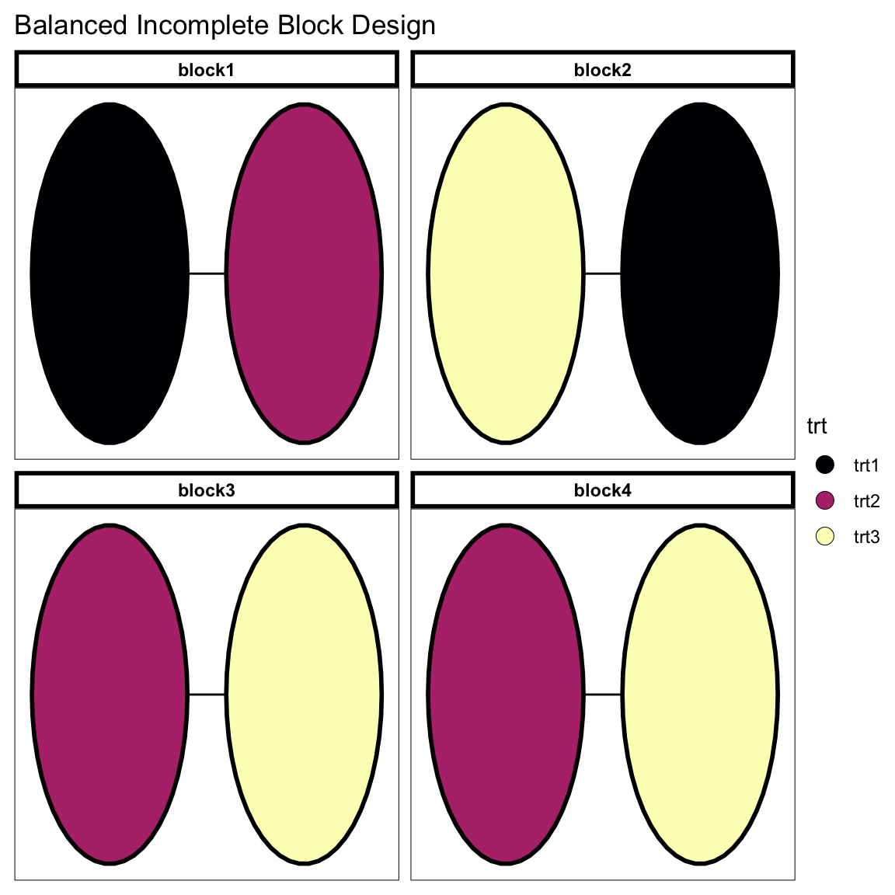
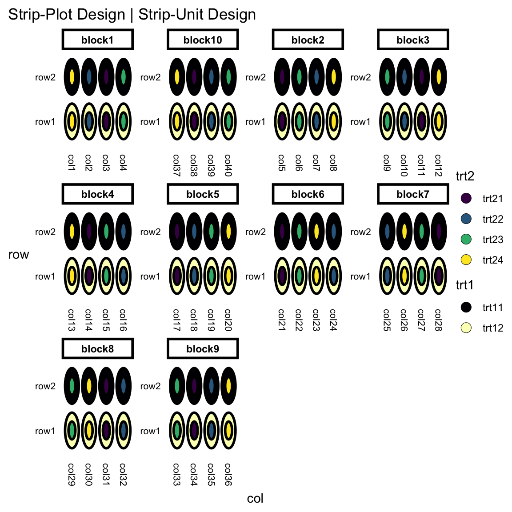
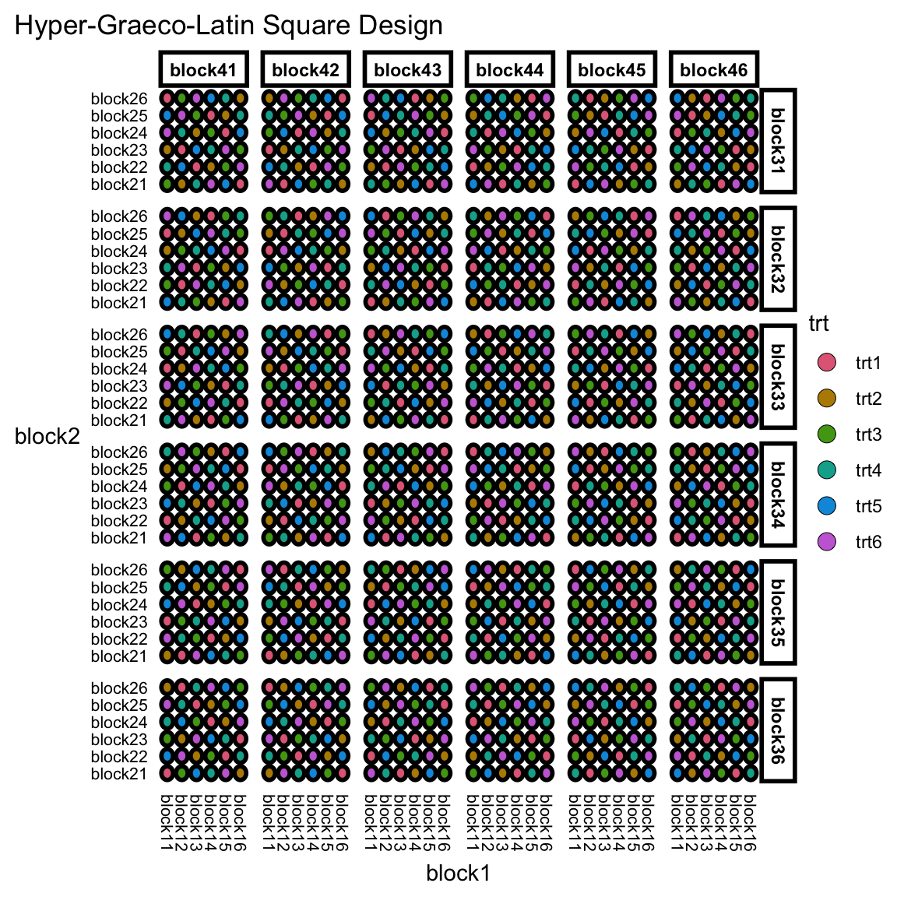

Chapter 5 Cookbook
Good design considers units and treatments first, and then allocates treatments to units. It does not choose from a menu of named designs.
– Bailey, 2008, Design of Comparative experiments
Every experiment requires a tailored design to properly suit the situation; you shouldn’t simply select an experimental design from a list of named designs. This concept isn’t unique to just experimental designs; take architecture for example where near identical “cookie-cutter” homes get built on masses to make development cheaper but it comes at a detrimental cost when it’s not fit for the landscape. There’s an economical cost that perhaps drive the use of cookie-cutter homes, but what’s the cost of using carefully tailored experimental designs? That you have to think more about the experiment? It’s a small cost if you think about the consequences of an ill-designed experiment. And I’m no real estate expert, but I wouldn’t invest in a cheap home that’s cutting corners to the point that it may have defects.
Named experimental design are handy in succinctly describing the experimental structure and treatment allotment to units, but you lose the direct association to the fundamental components that make up the experimental design. This can obscure seeing the association between different named experimental designs. The idea of the fundamental system in edibble is to encourage higher-order thinking from the user.
The use of named experimental designs is an endemic – it will continue to be prevalent in the field. So a compromising approach is used in the edibble system. For every named experimental design presented, there will be a function prefixed by menu_ that shows the recipe code in terms of the fundamental system. The user is supposed to copy-and-paste these code and modify the names of the units and treatments to their experimental context. You can choose to generate a design table using takeout(), but again I discourage you to use these approaches to generate a proper design.
The following sections present a number of recipes for some well known named experimental designs. The ingredients for each recipe are described in fundamental system terms (see Section 2).
What are the differences between Latin square design, Graeco-Latin square design and Hyper-Graeco-Latin square design?
5.1 Completely randomised design
A completely randomised design, commonly abbreviated as CRD, contain two factors: experimental units and treatments with a completely unstructured experiment (i.e. no grouping for the factors).
You can call on menu_crd() to see the code in the terms of the fundamental system. If you omit the argument values, then a random number will be selected for you.
menu_crd()start_design("Completely Randomised Design") %>%
set_units(unit = 23) %>%
set_trts(trt = 10) %>%
allot_trts(trt ~ unit) %>%
assign_trts("random", seed = 679) %>%
serve_table()If you want to generate the design table, then you can use the takeout() function parsing the named design object created by the set of menu_ functions. If you don’t select any menu then the takeout() function will automatically select a random menu for you. You can find the list of available named experimental designs by scanning the menu like below:
scan_menu()## ## ── edibble ──## ## • bibd with the arguments t, k, r, and seed for a Balanced Incomplete Block Design.## • crd with the arguments t, n, r, and seed for a Completely Randomised Design.## • factorial with the arguments trt, r, design, and seed for a Factorial Design.## • graeco with the arguments t and seed for a Graeco-Latin Square Design.## • hyper_graeco with the arguments t and seed for a Hyper-Graeco-Latin Square Design.## • lsd with the arguments t and seed for a Latin Square Design.## • rcbd with the arguments t, r, and seed for a Randomised Complete Block Design.## • split with the arguments t1, t2, r, and seed for a Split-Plot Design / Split-Unit Design.## • strip with the arguments t1, t2, r, and seed for a Strip-Plot Design / Strip-Unit Design.## • youden with the arguments nc, t, and seed for a Youden Square Design.crd <- takeout(menu_crd(t = 5, n = 30, seed = 1))
crd## start_design("Completely Randomised Design") %>%
## set_units(unit = 30) %>%
## set_trts(trt = 5) %>%
## allot_trts(trt ~ unit) %>%
## assign_trts("random", seed = 1) %>%
## serve_table()
##
## # Completely Randomised Design
## # An edibble: 30 x 2
## unit trt
## * <unit(30)> <trt(5)>
## 1 unit1 trt5
## 2 unit2 trt3
## 3 unit3 trt1
## 4 unit4 trt5
## 5 unit5 trt3
## 6 unit6 trt5
## 7 unit7 trt1
## 8 unit8 trt1
## 9 unit9 trt2
## 10 unit10 trt2
## # … with 20 more rowsThe design tables generated by takeout() are special types of data.frame.
You can quickly plot the design using the autoplot() in the deggust package.
autoplot(crd)
5.2 Randomised complete block design
rcbd <- takeout(menu_rcbd(t = 6, r = 10))
examine_recipe(rcbd)start_design("Randomised Complete Block Design") %>%
set_units(block = 10,
unit = nested_in(block, 6)) %>%
set_trts(trt = 6) %>%
allot_trts(trt ~ unit) %>%
assign_trts("random", seed = 326) %>%
serve_table()autoplot(rcbd)
5.3 Latin square design
lsd <- takeout(menu_lsd(t = 6))
examine_recipe(lsd)start_design("Latin Square Design") %>%
set_units(row = 6,
col = 6,
unit = ~row:col) %>%
set_trts(trt = 6) %>%
allot_trts(trt ~ unit) %>%
assign_trts("random", seed = 967) %>%
serve_table()autoplot(lsd)
5.4 Factorial design
fac <- takeout(menu_factorial(trt = c(3, 2)))
examine_recipe(fac)start_design("Factorial Design") %>%
set_units(unit = 24) %>%
set_trts(trt1 = 3,
trt2 = 2) %>%
allot_trts(~unit) %>%
assign_trts("random", seed = 805) %>%
serve_table()autoplot(fac)
5.5 Balanced incomplete block design
bibd <- takeout(menu_bibd(t = 5, r = 10, k = 4))
examine_recipe(bibd)## start_design("Balanced Incomplete Block Design") %>%
## set_units(block = 12,
## unit = nested_in(block, 4)) %>%
## set_trts(trt = 5) %>%
## allot_trts(trt ~ unit) %>%
## assign_trts("random", seed = 954) %>%
## serve_table()autoplot(bibd)
5.6 Split-plot design
spd <- takeout(menu_split(t1 = 2, t2 = 4, r = 10))
examine_recipe(spd)start_design("Split-Plot Design | Split-Unit Design") %>%
set_units(mainplot = 20,
subplot = nested_in(mainplot, 4)) %>%
set_trts(trt1 = 2,
trt2 = 4) %>%
allot_trts(trt1 ~ mainplot,
trt2 ~ subplot) %>%
assign_trts("random", seed = 959) %>%
serve_table()autoplot(spd)
5.7 Strip-plot design
strip <- takeout(menu_strip(t1 = 2, t2 = 4, r = 10))
examine_recipe(strip)start_design("Strip-Plot Design | Strip-Unit Design") %>%
set_units(block = 10,
row = 2,
col = nested_in(block, 4),
unit = ~row:col) %>%
set_trts(trt1 = 2,
trt2 = 4) %>%
allot_trts(trt1 ~ row,
trt2 ~ col) %>%
assign_trts("random", seed = 942) %>%
serve_table()autoplot(strip)
5.8 Graeco-Latin square design
graeco <- takeout(menu_graeco(t = 9))
examine_recipe(graeco)start_design("Graeco-Latin Square Design") %>%
set_units(row = 9,
col = 9,
unit = ~row:col) %>%
set_trts(trt1 = 9,
trt2 = 9) %>%
allot_trts(trt1 ~ unit,
trt2 ~ unit) %>%
assign_trts("random", seed = 787) %>%
serve_table()autoplot(graeco)
5.9 Hyper-Graeco-Latin square design
hyper_graeco <- takeout(menu_hyper_graeco(t = 6))
examine_recipe(hyper_graeco)start_design("Hyper-Graeco-Latin Square Design") %>%
set_units(block1 = 6,
block2 = 6,
block3 = 6,
block4 = 6,
unit = ~block1:block2:block3:block4) %>%
set_trts(trt = 6) %>%
allot_trts(trt ~ unit) %>%
assign_trts("random", seed = 160) %>%
serve_table()autoplot(hyper_graeco)
5.10 Youden square design
youden <- takeout(menu_youden(nc = 4, t = 5))
examine_recipe(youden)start_design("Youden Square Design") %>%
set_units(row = 5,
col = 4,
unit = ~row:col) %>%
set_trts(trt = 5) %>%
allot_trts(trt ~ unit) %>%
assign_trts("random", seed = 645) %>%
serve_table()autoplot(youden)